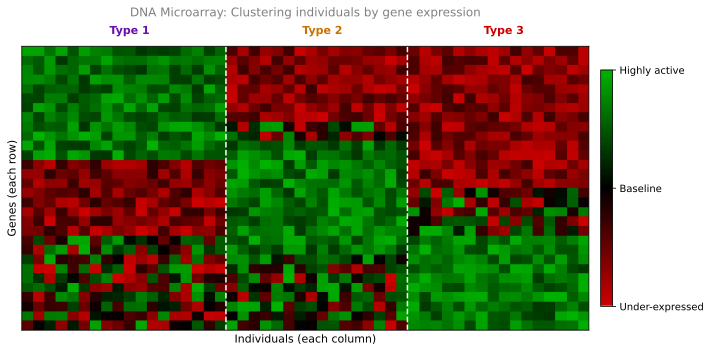

Unsupervised Learning
machine-learning
unsupervised-learning
In supervised learning, each example in the dataset is associated with an output label (for example, benign or malignant). In unsupervised learning,…
Supervised vs Unsupervised
In supervised learning, each example in the dataset is associated with an output label \(y\) (for example, benign or malignant). In unsupervised learning, the data is not associated with any output labels. Instead of being told the “right answers,” the algorithm must find structure, patterns, or something interesting in the data on its own.
For example, you might be given data on patients with their tumor size and age, but without knowing whether each tumor is benign or malignant. You are not asked to make a diagnosis. Instead, the algorithm’s job is to figure out what patterns or groupings exist in the data.
We call it “unsupervised” because we are not supervising the algorithm by giving it right answers for every input. We are asking it to figure things out all by itself.
Clustering
A particularly important type of unsupervised learning is clustering. A clustering algorithm takes unlabeled data and automatically groups it into different clusters (groups of similar data points).
Notice that no one tells the algorithm how many clusters to find or what defines each cluster. The algorithm discovers this structure on its own from the data.
Review Questions
1. What is the main difference between supervised and unsupervised learning?
TipAnswer
In supervised learning, the training data includes labels (the correct output \(y\) for each input \(x\)). In unsupervised learning, the data has no labels, and the algorithm must find patterns or structure on its own.
1. Why is it called “unsupervised” learning?
TipAnswer
Because we are not supervising the algorithm by providing the right answers. Instead of telling it what the correct output should be, we ask it to discover interesting structure in the data by itself.
Applications of Clustering
Google News
Google News looks at hundreds of thousands of news articles on the internet every day and groups related stories together. For example, if multiple articles mention the words “panda,” “twins,” and “zoo,” the clustering algorithm groups them together as a single news topic.
What makes this impressive is that no one tells the algorithm which words to look for. The news topics change every day, and there are so many stories that it is not feasible to have people manually categorize them. The algorithm figures out on its own which articles belong together.
DNA Microarray Data
In genetics research, a DNA microarray measures how much certain genes are expressed (active) for each individual person. The data looks like a grid where each column represents one person and each row represents a gene. The colors indicate gene expression levels: green means a gene is highly active, red means it is under-expressed, and black means it is at baseline.
For example, one row might represent a gene that affects eye color, another might affect height, and yet another might determine whether someone dislikes certain vegetables like broccoli or asparagus.

By running a clustering algorithm on this data, researchers can automatically group individuals into different types (Type 1, Type 2, Type 3) without telling the algorithm in advance what those types are or what characteristics define them. The algorithm discovers the groupings from the gene expression patterns alone.
Market Segmentation
Many companies have large databases of customer information. Clustering can automatically group customers into different market segments so the company can serve each segment more efficiently.
For example, the DeepLearning.AI team used clustering to understand the motivations of their community members. The algorithm discovered distinct groups:
- One group primarily motivated by seeking knowledge to grow their skills
- Another group focused on career development (getting a promotion or new job)
- A third group wanting to stay updated on how AI impacts their field of work
No one told the algorithm these categories existed. It discovered them from the data.
Review Questions
1. In the Google News example, what does the clustering algorithm use to group articles together?
TipAnswer
It finds articles that mention similar words (like “panda,” “twins,” “zoo”) and groups them into the same cluster. No one tells the algorithm which words to look for. It figures this out on its own.
1. Why is DNA microarray clustering considered unsupervised learning?
TipAnswer
Because researchers do not tell the algorithm in advance what types of people exist or what characteristics define each type. They provide the gene expression data without labels, and the algorithm discovers the groupings on its own.
1. A company wants to group its customers into segments based on purchasing behavior, but does not know in advance how many segments there are or what defines each one. Is this supervised or unsupervised learning?
TipAnswer
Unsupervised learning (specifically clustering). The company has no labels telling it which segment each customer belongs to. The algorithm must discover the groupings from the data.
Other Types of Unsupervised Learning
Clustering is just one type of unsupervised learning. In this specialization, you will also learn about two additional types:
Anomaly Detection
Anomaly detection is used to detect unusual events. This is important for fraud detection in the financial system, where unusual transactions could be signs of fraud. The algorithm learns what “normal” looks like, and then flags anything that deviates significantly from that pattern.
Dimensionality Reduction
Dimensionality reduction lets you take a big dataset and compress it to a much smaller dataset while losing as little information as possible. Imagine you have data with hundreds of features (columns). Dimensionality reduction can find a way to represent that same data with just a handful of features, making it easier to visualize and work with.
Review Questions
1. Which of the following would you address using an unsupervised learning algorithm? (Check all that apply.)
- Given a set of news articles found on the web, group them into sets of articles about the same stories.
- Given email labeled as spam/not spam, learn a spam filter.
- Given a database of customer data, automatically discover market segments and group customers into different market segments.
- Given a dataset of patients diagnosed as either having diabetes or not, learn to classify new patients as having diabetes or not.
TipAnswer
a and c. Grouping news articles into topics and discovering market segments are both unsupervised learning (clustering) because you are not given labels. You ask the algorithm to find structure in the data on its own. Options b and d are supervised learning because you have labeled data (spam/not spam, diabetes/not diabetes) and are learning a mapping from input to output.
1. What is anomaly detection, and why is it useful in finance?
TipAnswer
Anomaly detection identifies unusual events that deviate significantly from normal patterns. In finance, it is used for fraud detection because fraudulent transactions typically look different from legitimate ones. The algorithm learns what “normal” transactions look like and flags anything that stands out.
1. What does dimensionality reduction do, and why would you want to use it?
TipAnswer
Dimensionality reduction compresses a large dataset (with many features) into a smaller representation while preserving as much information as possible. You would use it to make data easier to visualize, speed up other learning algorithms, or reduce storage requirements.
1. Which of these is a type of unsupervised learning?
- Classification
- Regression
- Clustering
TipAnswer
c. Clustering is a type of unsupervised learning. It groups data into clusters based on how similar each item (such as a hospital patient or shopping customer) is to each other. Classification and regression are both types of supervised learning.